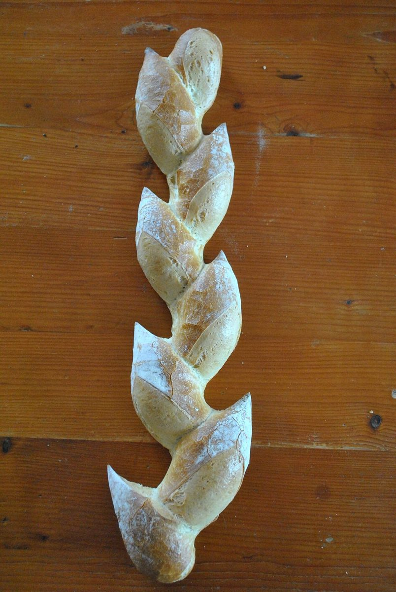

制作側の連想
シルクハットの二重底
店名の由来は分かりません。制作側は、ベーカリーという業種から、焼き上がりを待つときの「何が出てくるだろう」という気持ちを連想し、手品でシルクハットから何かが現れる場面に見立ててこのサイトを作りました。ページの見出しも「ふたを開ける」「取り出し口」「拍手」「二重底の中」「舞台」と手品の流れにそろえています。
これは制作側の連想で、お店の理念・由来とは無関係です。
ふたの下から(イメージ)
シルクハットから出てくる、パンの写真たち。
写真は大山町やお店のものではありません。国外もしくは撮影地不明のフリー素材で、お店の商品を示すものでもありません。



ご案内
お店のこと(確認できたものだけ)
| 所在地 | 〒689-3324 鳥取県西伯郡大山町妻木1424-3 |
|---|---|
| 電話 | 0859-53-5757 |
| 営業時間 | 準備中 |
| 定休日 | 準備中 |
| ご予約 | 準備中 |
| 駐車場 | 準備中 |
| SNS | Instagram @ichibakery.43 |